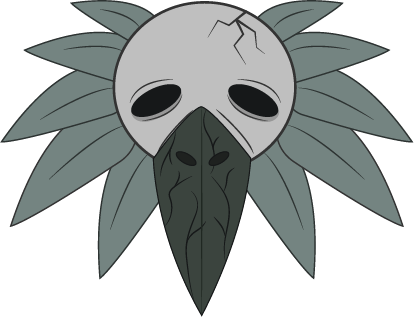
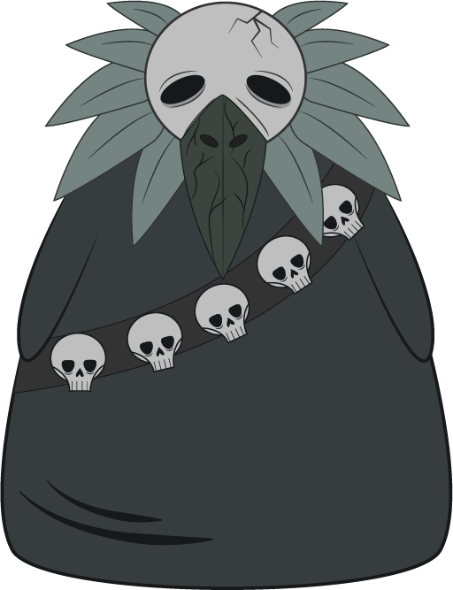

Spot Oficial
Galería
Aquí comienza el viaje visual por los paisajes donde todo se volvió escasez. Un recorrido por la producción que dio vida (y sombra) a una historia de sed, pérdida y alucinación.




Nuestro personaje
El cóndor de la última lágrima es la representación de la completa desesperanza, esto se demuestra por medio de su expresión con sus ojos caídos y sus ojeras, también representa la deshidratación por medio de su craneo y su pico muerto y seco. Esta idea se refuerza con los colores corporativos que ayudan a darle una estética desesperanzadora.